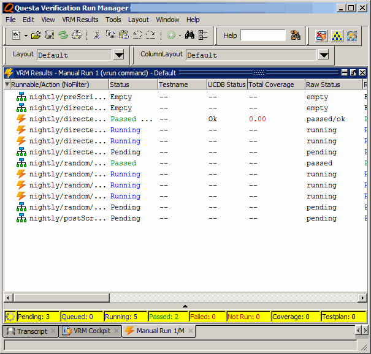

Run the Example Tutorial in GUI Mode
Copy the contents of the examples/vrm/simple directory to an empty directory:
cp -r <install_dir>/examples/vrm/simple .Change directory to vrm/simple:
cd simpleExecute the command to run the default.rmdb database as follows:
vrun -gui
This invokes the Questa Verification Run Manager GUI as shown in Figure 1.
The VRM GUI invokes with the Default Configuration Created, VRM Cockpit, and the Transcript windows as shown in Figure 1. In the Default Configuration Created window, do the following:
select -> OK
In the VRM Cockpit window, do the following as shown in Figure 2:
select -> Default Configuration 1
right-click -> select -> Edit Configuration...
This invokes the Edit VRM Configuration window.
select -> Runnables Tab
Figure 3 shown the Edit VRM Configuration Runnable tab.
select -> nightly
The check boxes display the Runnables that will be run.

select -> OK
This invokes the Create VRM Data Directory window as shown in Figure 4‑3.
select -> Yes
To initiate the regression run, do the following as shown in Figure 5.
select -> VRM Cockpit -> Run
To initiate the regression run, do the following:
select -> VRM Cockpit -> Run
Figure 6 shows the VRM Results window with the regression run in progress.
Below the Action status table is a row of counters with an animated “running light” on the left-most side of the row (see Figure 6). The running light indicates the state of the overall regression run (such as Running, Queued, or Passed). The counters indicate how many Actions exist in each of the listed categories as follows:
The Pending category includes tests that are not yet eligible to launch (they are waiting for something else to finish. For example,
Pending:3
indicates that there are three jobs pending.
The Queued category includes tests that are eligible and have been launched, but have not yet reported that they are running (these tests are probably in the grid queue).
The Running category indicates the tests that are running. The running tests are listed in the Status column.
Several other counters (Suspended, Passed, Failed, Timeout, Killed, Skipped, and Dropped) identify other potential states.
The Coverage category provides information about coverage collected for the tests.
The Testplan category provides information about any related testplans for the tests.
Figure 6. Regression Run in Progress
Figure 7 shows the regression run completed.
When the regressions finish running, the results can be observed in the Status column of the VRM Results window as shown in Figure 7. Observe that all nightly/directed/dirtest* and nightly/random/randtest* tests passed.
The top-level simple directory now contains the automatically generated transcript file and VRMDATA directory.
The VRMDATA directory contains the History directory and nightly directory as shown in Figure 8.
The logs directory contains data files pertaining to the status of the regression runs launched in that directory.
The nightly directory contains the directed directory and random directory, and many files.
These automatically generated output files can be viewed using the GUI. In the VRM Results window select the Action whose output you wish to observe and right-click on the action and select
This displays the execScript.log file as shown in Figure 9.
You can view other files by right-clicking an action and selecting View > File in VRM Data, which opens the Open File in VRM Data Directory window, as shown in Figure 10.
select -> file
select -> Open
The file that you select opens in the GUI window as shown in Figure 11. For this example tutorial, the execScript.do file was selected.